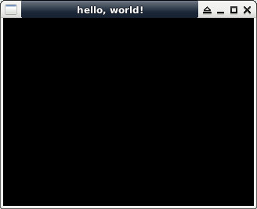

參考資訊：
https://github.com/SFML/SFML
https://www.sfml-dev.org/index.php
$ cd
$ git clone https://github.com/SFML/SFML sfml
$ mkdir sfml/build
$ cd sfml/build
$ cmake .. \
-DSFML_OPENGL_ES=OFF \
-DSFML_USE_SYSTEM_DEPS=ON \
-DCMAKE_BUILD_TYPE=Release \
-DCMAKE_POLICY_VERSION_MINIMUM=3.5
$ make
$ sudo make install
$ cd
$ git clone https://github.com/ptitSeb/gl4es
$ mkdir gl4es/build
$ cd gl4es/build
$ cmake ..
$ make
$ sudo make install
$ vim main.c
#include <unistd.h>
#include <iostream>
#include <SFML/Graphics.hpp>
int main(int argc, char **argv)
{
sf::RenderWindow window(sf::VideoMode(320, 240), "hello, world!");
window.clear();
window.display();
usleep(3000000);
window.close();
return 0;
}
$ g++ main.cpp -o main -lsfml-graphics -lsfml-window -lsfml-system
$ LD_LIBRARY_PATH=/usr/lib/gl4es ./main
